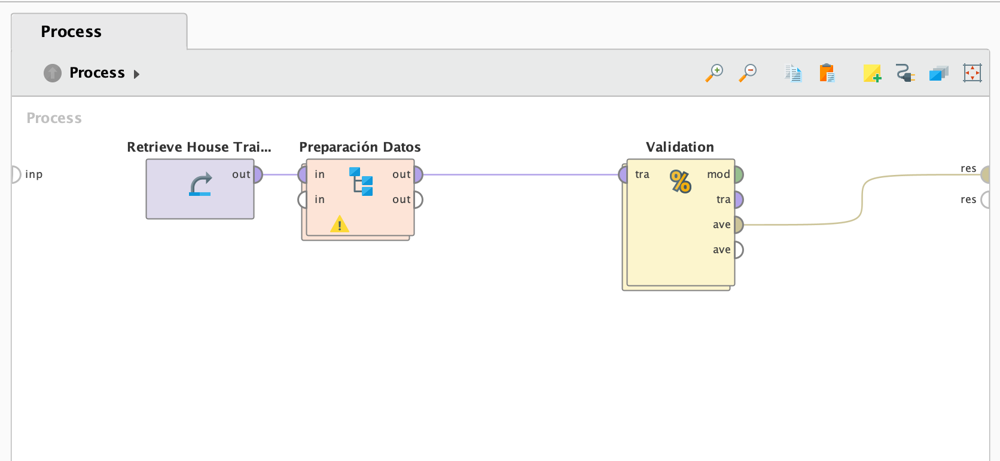

Contexto
Las predicciones precisas de los precios de las viviendas son esenciales para compradores, vendedores, agentes inmobiliarios e inversores. Por ejemplo, los agentes inmobiliarios pueden utilizar modelos basados en este conjunto de datos para establecer precios competitivos de venta, mientras que los compradores pueden tomar decisiones de compra más informadas. Además, los inversores en bienes raíces pueden identificar oportunidades y riesgos potenciales en el mercado. En resumen, el "House Pricing Dataset" desempeña un papel fundamental en la optimización de estrategias comerciales y financieras en el ámbito de la inversión y la adquisición de propiedades.
El machine learning y el data mining desempeñan un papel fundamental en el sector inmobiliario al permitir el análisis y la extracción de conocimientos valiosos a partir de grandes volúmenes de datos. Estas tecnologías posibilitan la predicción precisa de los precios de las propiedades, la identificación de tendencias de mercado, la evaluación de riesgos, la optimización de estrategias de inversión y la personalización de recomendaciones para compradores y vendedores. Además, facilitan la automatización de tareas administrativas, como la gestión de listados, la clasificación de propiedades y la identificación de oportunidades de inversión. En última instancia, el machine learning y el data mining en el sector inmobiliario contribuyen a la toma de decisiones más informadas, la eficiencia operativa y la mejora de la experiencia del cliente, lo que aumenta la competitividad y el éxito en un mercado en constante evolución.
Entendimiento del negocio
Como se explica anteriormente una solución de ML puede tomar un papel importante en este modelo de negocio. El dataset obtenido de UCI, en el cual se tienen las distintas caracteristas de cada casa, como objetivo se tiene el de aproximar el valor que tiene una casa al introducir las características de la casa.
Conocimiento de datos
En los atributos seleccionados no existen Missing Values.
Implementación RapidMiner
A continuación se muestra el proceso de implementación en RapidMiner. Se utiliza un nuevo operador llamado Validation, el cual se utiliza para realizar la validación de modelos. Su función es evaluar el rendimiento de un modelo de aprendizaje automático en un conjunto de datos.
Procesamiento de datos
Se setea el rol del precio de las casas como atributo objetivo.
Para procesar los datos, se tuvo en cuenta que el dataset obtenido cuenta con un total de 81 atributos, lo cual hace imposible a la hora de aplicar un modelo como puede ser Regresión Lineal, en el cual por cada atributo lo considera como una nueva dimensión de características. Es decir, cada atributo representa una dimensión, en ese espacio. Por lo anterior, se seleccionan 7 atributos, los cuales se detallan en la sección Conocimiento de los datos. Estos 7 datos son importantes ya que tienen que ver con el precio de la vivienda, el cual es el atributo que se quiere predecir.
Aplicación de los modelos
En cuanto a la aplicación, en este caso al ser un problema de regresión, se aplica el algoritmo de Regresión Lineal.
Resultados obtenidos
Prueba de Feature Selection
Se probó el algoritmo con varios Foward Selection, Backward Elimination, Optimize Selection. Todos bajando ligeramente el RMSE, siendo Backward Elimination el que más ventaja sacó a los demás, dando el RMSE de la segunda foto. Su objetivo es simplificar y mejorar los modelos al eliminar atributos que pueden no contribuir significativamente a la predicción de la variable de respuesta.
Implementación Python
import pandas as pd
from sklearn.model_selection import train_test_split
from sklearn.linear_model import LinearRegression
from sklearn.metrics import mean_squared_error
data = pd.read_csv('../data/House Train ')
data = data[['FullBath', 'GarageArea', 'GrLivArea', 'OverallQual', 'TotalBsmtSF', 'TotRmsAbvGrd', 'YearBuilt', 'SalePrice']]
X = data.drop('SalePrice', axis=1)
y = data['SalePrice']
X_train, X_test, y_train, y_test = train_test_split(X, y, test_size=0.3, random_state=1992)
model = LinearRegression()
model.fit(X_train, y_train)
y_pred = model.predict(X_test)
mse = mean_squared_error(y_test, y_pred)
print("Error cuadrático medio:", mse)
Descarga de recursos
House proceso de RapidMiner (Click para ir al enlace)
Kaggle House DataSet (Click para ir al enlace)
House Python proceso (Click para ir al enlace)